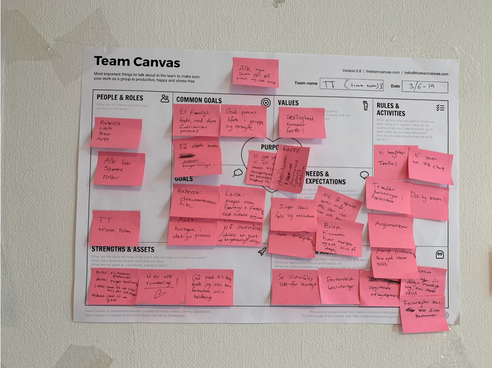
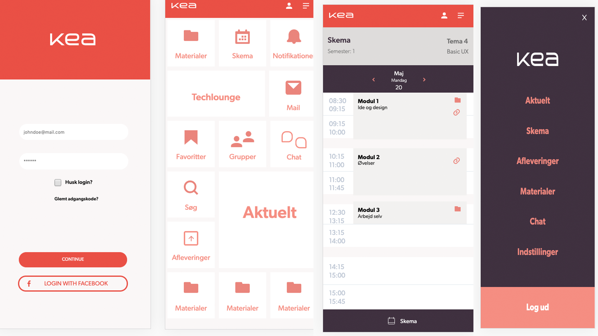
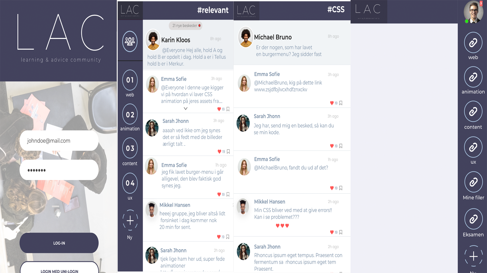

Her skulle vi kode en prototype som underviserne havde designet i Adobe XD.
Det vil sige vi skulle opsætte html og css stuktur. Med andre ord skulle vi lave en front-end løsning.
Vi fik udleveret et styletile og en prototype som vi skulle tage udgangspunkt i.
PJ
UX
I dette tema fik vi en grundlæggende forståelse for brugere og brugergrænseflader.
Herunder også hvordan disse to spiller sammen, og hvilke teorier, værktøjer og metoder der kan bruges
til research og design. Herunder test og produktion af digitale løsninger til smartphones.
Altså at man får konkret imperi og indsigt om brugerne i stedet for egen mavefornemmelse.
Her fik vi til opgave at arbejde med Designsprint samt designe vores egen prototype i Adobe XD.

Undervisernes prototype

LAC
Vi skulle derudover bruge disse færdigheder og metoder til at designe vores egen
prototype i grupper, udfra tests som vi lavede på vores målgruppe. Min gruppe tog udgangspunkt i at designe en platform
til KEA som gjorde det nemmere og hurtige, samt mere tilgængligt at søge hjælp og vejledning
blandt studerende på tværs af årgange. Vi lavede spørgeskemaer som grundlag for vores research
for at udpege de aktuelle områder de studerende mente kunne optimere deres studieliv.
Derfor valgte vi at lave en kommunikativ løsning der baserer sig på andre elevers erfaringer og løsninger.
Velkommen til LAC.
